↑玩偏振片的影片
↑兩片偏振片，偏振方向平行，光線可以通過。
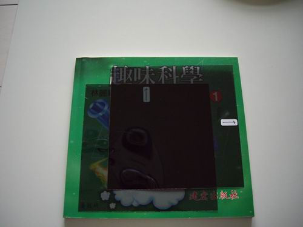
↑兩片偏振方向垂直，光線無法通過。
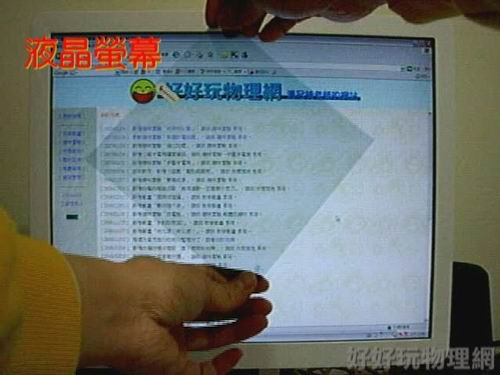
↑偏振方向左斜45度，光線可以通過。
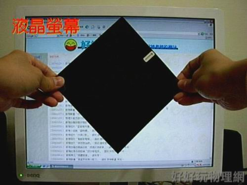
↑偏振方向右斜45度，光線不能通過。想一想，液晶螢幕所發出的光，
偏振方向為何？
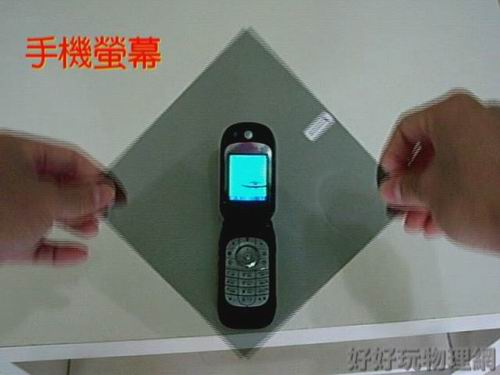
↑偏振方向右斜45度，手機螢幕看起來是藍色的。
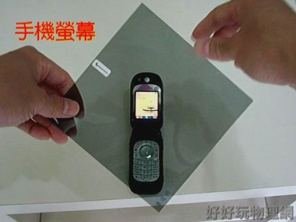
↑偏振方向左斜45度，同一個手機螢幕看起來是黃色的。
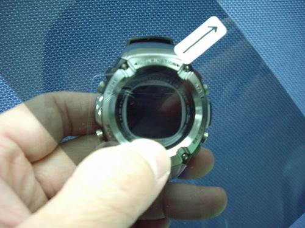
↑偏振方向右斜45度，就看不到電子錶的螢幕了。
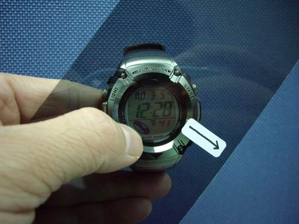
↑偏振方旋轉90度，又看的到螢幕了。
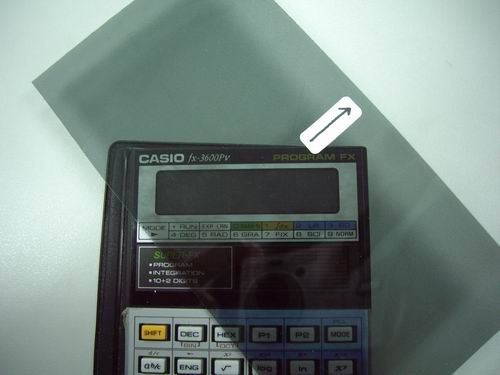
↑不僅是電子錶，計算機的螢幕也是偏振光。
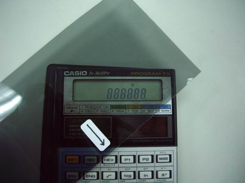
↑看來計算機的螢幕偏振方向和電子錶一模一樣。
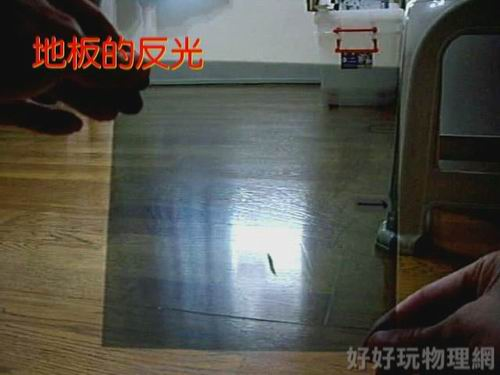
↑偏振方向水平，木地板反射的光線相當明顯。
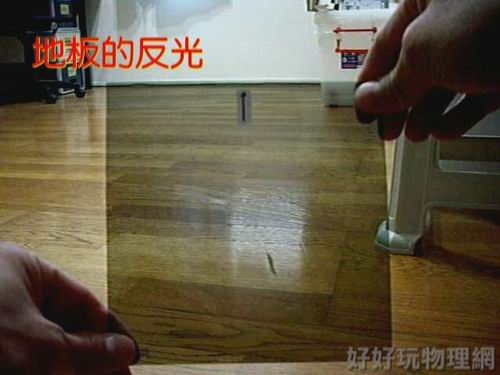
↑偏振方向改為垂直，反射光就幾乎看不見了。
想一想：經由地板反射的光線，偏振方向為何？
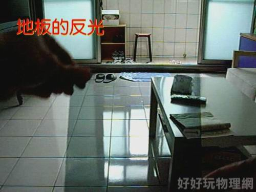
↑偏振方向水平，瓷磚地板反射的光線相當明顯。
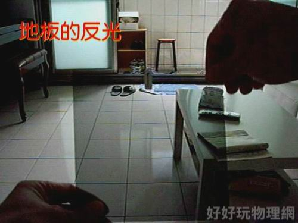
↑偏振方向改為垂直，反射光就幾乎看不見了。
想一想：經由地板反射的光線，偏振方向為何？與木地板相同嗎？
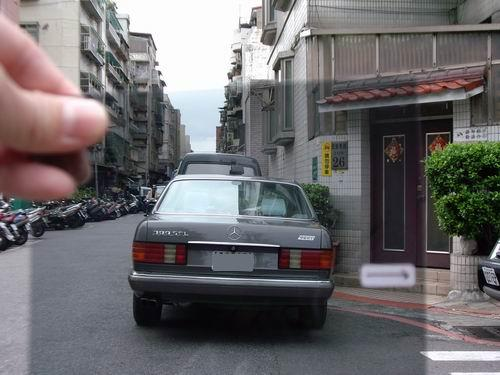
↑偏振方向水平，車窗反射的光線相當明顯。
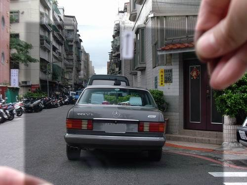
↑偏振方向改為垂直，反射光就幾乎看不見了(可以看到車內的物體)。
想一想：經由車窗反射的光線，偏振方向為何？與地板反射相同嗎？
為何這些反射光都會是水平方向偏振呢？(提示：查查〝布魯斯特角〞)
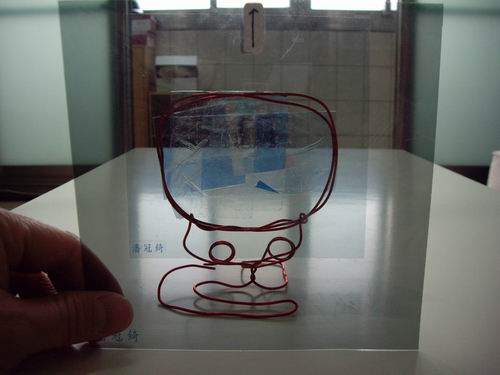
↑把膠帶貼一貼，用兩片偏振片把他夾起來，偏振方向平行時，看起來
膠帶重疊的地方是藍色的。
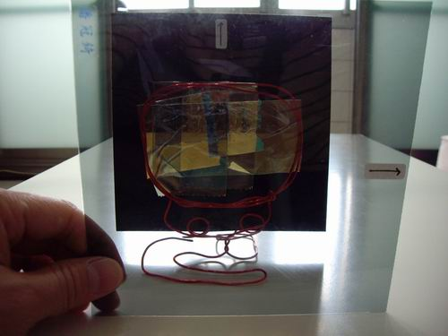
↑將偏振方向改為垂直時，看起來膠帶重疊的地方變成黃色的。
想一想，為何膠帶顏色會改變呢？